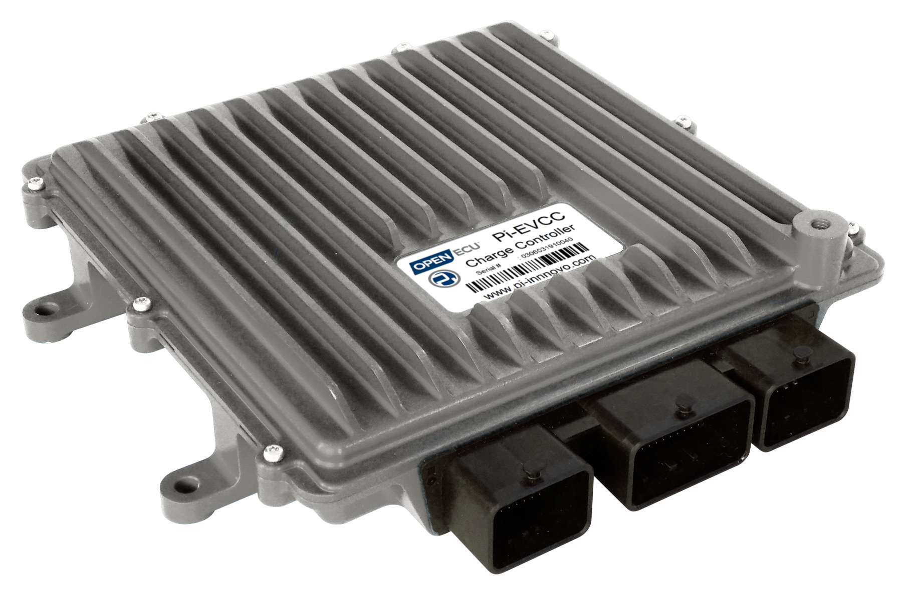
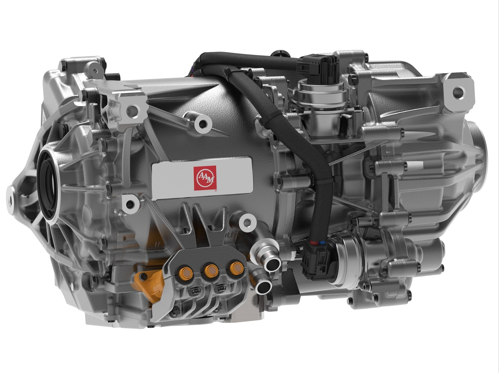
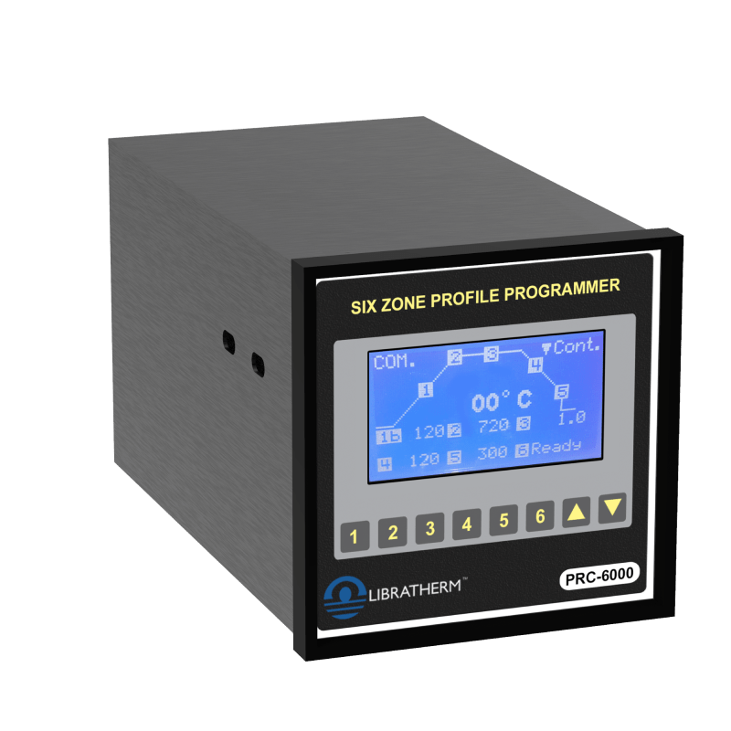
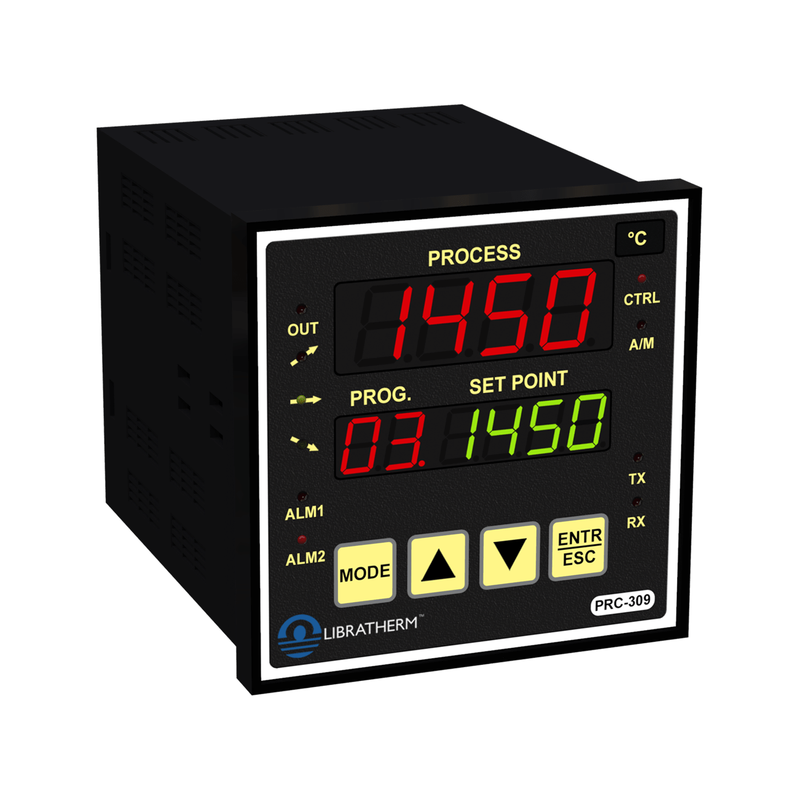
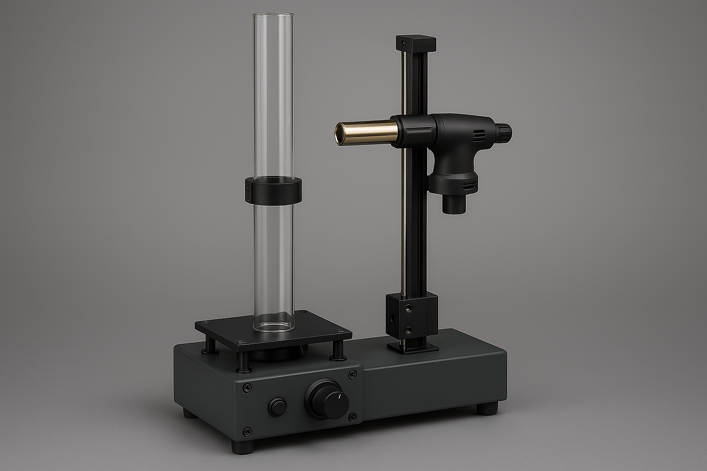
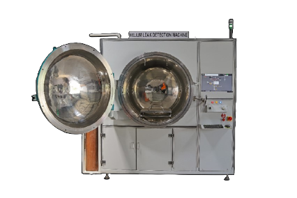

My Projects
- Embedded C, C++, DaVinci, PreeVision
- ALM, VFlash
- VectorCast, ASAP2, CANalyzer, CANape, CANoe
- vTESTstudio
Description
Power State Manager (PSM). I was responsible for developing and maintaining the software that handles the critical power-on sequence for three-layer boards. It was a complex multi-stage process where I had to ensure a seamless handoff from the hardware to QNX and eventually to Linux via a hypervisor. I worked on SWE.1 to SWE.4 of the ASPICE layer.
Beyond the core embedded work, I noticed our bug-tracking process was a bottleneck. To fix that, I built an AI-driven RAG pipeline to automatically triage tickets. I also worked closely with our architects to refine the “OnOff” system to make sure our safety-critical automotive startups were as robust as possible.

- Embedded C, C++, DaVinci, PreeVision
- ALM, VFlash
- VectorCast, ASAP2, CANalyzer, CANape, CANoe
- vTESTstudio
Description
"In my role as the Lead Embedded Software Engineer for our Motor Control ECU, I focused on delivering high-quality, safety-critical firmware for an Aurix-based electronic control unit. I developed device drivers in embedded C and configured the Microcontroller Abstraction Layer (MCAL). I also configured RTOS services (RTA-OS) and Basic Software (BSW) in AUTOSAR configuration tools. During my time at American Axle & Manufacturing, I was also responsible for integrating specialized third-party libraries like Infineon’s SafeTlib and Cycurlib for security and safety compliance."
To ensure production-grade reliability, I continuously participated in customer and internal audits, identified gaps in the development lifecycle, and defined action items to overcome non-compliance. This involved revisiting ASPICE SWE.1 through SWE.5 and building checks like coding guideline documentation templates to standardize the development process. By implementing systematic Software Unit Verification (SWE.4) and Integration Testing (SWE.5), we caught bugs early and maintained the high quality expected in automotive systems. I was also responsible for coaching my team to meet demanding delivery milestones.

- Embedded C, C++, ETAS ISOLAR-A/B
- MATLAB/Simulink, Polyspace, VFlash
- VectorCast, ASAP2, CANalyzer, CANape, CANoe
- vTESTstudio
Description
"In my role as the Lead Embedded Software Engineer for our Motor Control ECU, I focused on delivering high-quality, safety-critical firmware for an Aurix-based electronic control unit. I developed device drivers in embedded C and configured the Microcontroller Abstraction Layer (MCAL). I also configured RTOS services (RTA-OS) and Basic Software (BSW) in AUTOSAR configuration tools. During my time at American Axle & Manufacturing, I was also responsible for integrating specialized third-party libraries like Infineon’s SafeTlib and Cycurlib for security and safety compliance."
To ensure production-grade reliability, I continuously participated in customer and internal audits, identified gaps in the development lifecycle, and defined action items to overcome non-compliance. This involved revisiting ASPICE SWE.1 through SWE.5 and building checks like coding guideline documentation templates to standardize the development process. By implementing systematic Software Unit Verification (SWE.4) and Integration Testing (SWE.5), we caught bugs early and maintained the high quality expected in automotive systems. I was also responsible for coaching my team to meet demanding delivery milestones.
- Embedded C, C++, ETAS ISOLAR-A/B
- MATLAB/Simulink, Polyspace, VFlash
- VectorCast, ASAP2, CANalyzer, CANape, CANoe
- vTESTstudio
1. Core System Migration & Performance Upgrading
"During my tenure, we transitioned the skid steer’s control logic from legacy 16-bit hardware to a 32-bit Renesas-based ECU. I personally handled the application layer migration, ensuring that the machine’s behavior remained consistent and safe despite the total change in underlying silicon."
2. Communication & Data Integrity (CAN/SPI/I2C)
"I developed the low-level drivers that allowed the main processor to talk to external CAN controllers and memory modules via SPI and I2C. This ensured that the loader could handle high-bus-load telematics data and critical sensor feedback without latency, which is vital for real-time machine stability."
3. Model-Based Feature Development (MBD)
"I worked on the 'brains' of the vehicle using Model-Based Design. By utilizing Embedded Coder, I transformed control models into production C/C++ code. To ensure these features—like bucket leveling or traction control—functioned perfectly, I ran them through MIL and SIL simulation loops."
4. JDOS (John Deere RTOS) Integration
"I integrated these software features into JDOS, the proprietary real-time operating system. This involved managing the 'heartbeat' of the machine—ensuring that safety-critical tasks (like emergency shut-offs) always had priority over non-critical tasks (like cabin climate control display) within the RTOS scheduler."
5. Product Reliability & Safety (8D/FMEA)
"To ensure the loader could withstand 10,000+ hours of operation in harsh environments, I applied DFMEA (Design Failure Mode and Effects Analysis) to the software. If a defect was found in the field, I led the 8D root cause analysis to find the 'why' and implement a permanent fix. My focus was on ensuring that a software glitch would never result in a 'machine down' situation in the field."
6. Lifecycle & Delivery (CI/CD)
"I managed the Vehicle Payload Delivery pipeline. This is essentially the factory-to-field software delivery system. I maintained the CI/CD environment to ensure that every software build destined for the assembly line or a dealer's service tool was fully validated, signed, and ready for deployment into the loader's ECU."

- STM32CubeMX, STM32CubeIDE
- ST-LINK JTAG
- PuTTY
- Embedded C/C++
1. Architecture & Concurrency
"The core of the system is an STM32 microcontroller where I managed six independent control loops. I designed the firmware to handle simultaneous PID and On/Off control for six zones. This required efficient task scheduling to ensure that sensor sampling, PID calculations, and SSR pulse-width modulation occurred with precise timing without jitter."
"I implemented the driver logic for six K-type thermocouple inputs. This involved handling analog-to-digital conversion, cold-junction compensation, and digital filtering to ensure stable readings in noisy industrial environments. I also integrated a dedicated safety routine that monitors for thermocouple faults and triggers a global hardware interrupt/fault relay."
3. Control Logic & Profile Programming
"One of the key challenges was the Ramp/Soak profile engine. I developed a state machine that allows for 1 to 4 programmable steps per zone. I also implemented a 'Servo Start' feature, which synchronizes the profile start with the current process temperature, and a deviation hold logic to ensure all zones stay within a specific thermal window during critical heating cycles."
4. Peripherals & Communication
"For the HMI, I integrated a graphical LCD and a matrix keyboard, allowing users to switch between Auto/Manual modes and visualize real-time curves. On the connectivity side, I implemented RS-485 serial communication using a custom protocol for PC-based data logging and a Master/Slave architecture that allows for cascading up to 60 control zones across 10 devices."

- Simplicity Studio
- JTAG Debugger
- PuTTY, Altium Designer
- Embedded C/C++
1. System Architecture & Memory Management
"I designed the firmware architecture around a robust state machine capable of managing complex thermal profiles. Given the constraints of an 8-bit environment, I prioritized efficient memory mapping to handle up to 10 distinct patterns of 16 ramp/soak steps each. A critical component of this architecture was the integration of non-volatile flash memory routines, ensuring that all programmed parameters and process states are preserved and can auto-resume following a power disruption."
2. Sensor Interfacing & Signal Conditioning
"To ensure the controller's versatility, I developed an adaptable analog front-end driver that supports a wide range of inputs, including K, R, S, and B-type thermocouples and RTDs. This involved implementing precise linearization algorithms and cold-junction compensation to maintain high accuracy. I also focused on signal integrity, utilizing digital filtering techniques to provide stable temperature readings even in the electrically noisy environments typical of industrial furnaces."
3. Control Logic & Profile Execution
"The core control logic features a sophisticated PID engine that supports both switching and linear outputs. I implemented a 'Servo Start' function to synchronize the profile execution with the actual process temperature at startup, preventing thermal shock. Whether the system is driving an SSR via pulse-width modulation or a modulating motor valve via 4–20 mA analog control, the logic is tuned to maintain tight tolerances during critical ramp and soak transitions."
4. Peripherals & Serial Communication
"For the user interface, I managed a multi-display driver and a membrane keyboard interrupt routine to allow for simultaneous monitoring of process and set values. On the connectivity side, I implemented an RS-485 serial communication port to facilitate remote monitoring. This allows the device to interface with Windows-based software for real-time data logging and graphical analysis, providing a comprehensive view of the heating system's performance."

- Keil uVision
- JTAG Debugger
- PuTTY, Altium Designer
- Embedded C/C++
1. Architecture & Concurrency
"The firmware is built on a C8051F35x microcontroller using a real-time bare-metal scheduler to manage the simultaneous rotation and vertical linear motion. I utilized hardware timers to drive the ball screw stepper motor while running a background countdown timer for the heating process. This concurrent architecture ensures that the burner maintains a steady reciprocating motion without interrupting the user interface or safety monitoring."
2. Sensor Interfacing & Signal Integrity
"I configured the top and bottom proximity sensors as external interrupts to provide instantaneous feedback when the burner reaches its travel limits. To eliminate false triggers from motor vibration or electrical noise, I implemented a software debouncing algorithm and opto-isolation at the hardware level. This approach guarantees precise reversal points for the ball screw, ensuring the heat is applied consistently across the entire length of the glass tube."
3. Control Logic & Profile Programming
"The control logic follows a finite state machine that transitions from parameter entry to active heating based on the time value provided via the keypad. I programmed a synchronized reversal logic that flips the motor direction bit the moment a limit sensor is tripped, maintaining a continuous vertical 'scan.' Additionally, a safety watchdog monitors the rotation plate's RPM to automatically retract the burner if the tube stops spinning, preventing material failure."
4. Peripherals & Communication
"I integrated a 4×4 membrane keypad for user input and a character LCD to display real-time process status and remaining cycle time. The system uses an EEPROM peripheral to store the last-used heating parameters, allowing for quick setup after power cycles. For diagnostics, I implemented a UART serial interface that outputs cycle counts and sensor status to a PC for maintenance logging."

- ISPSoft Programming Software
- Structured Text, Instruction List
- C#, MySQL
- Power Electronics
System Description
"Helium leak test systems were designed for high-precision integrity verification of jobs used in high-voltage applications, using helium's small molecular size and inert properties as a tracer gas. The systems operate by subjecting parts to pressures up to 300 bar and can detect leak rates as low as 10⁻⁸ mbar·l/s. These can be integrated into production lines with automated material movement, performing continuous self-monitoring, automatic calibration, and may include an integrated helium recovery station. Operations are managed via a SCADA interface for control and remote maintenance.
This product contains three main modules: one modular helium detector, a control PLC (SPS), and a Windows-based software developed in C#. The PC was connected to the PLC using a Modbus RTU communication on the PLC side and an RS-485-to-USB converter on the PC side. The PLC was also connected to the detector over a PROFINET bus. My role was to develop the control software for the machine on the PLC.
The software on the PLC side was developed in Structured Text and Instruction List. I also supported the PC software developer in understanding the Modbus RTU protocol and implementing data retrieval and control logic."